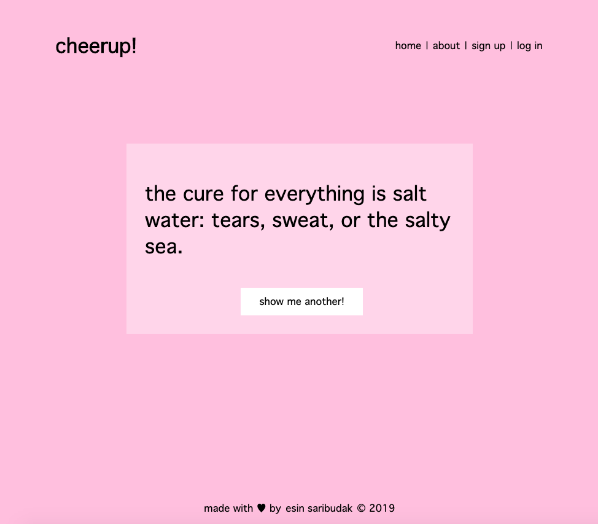

cheerup!
For my second project in the General Assembly Software Engineering program, I built a full-stack CRUD application using Express, Node and Mongoose for the backend and Handlebars HTML templating with CSS and JS for the frontend.
I used Passport to allow registered users to sign up or log in with password encryption. The server and database are hosted on MongoDB Atlas and the frontend of the application can be found hosted here on Heroku. My GitHub repository is also publicly available.